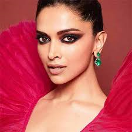
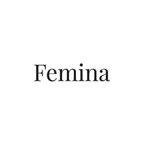
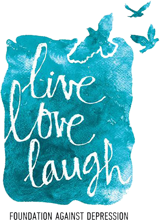

Deepika Padukone is an Indian actress,daughter of world-renowned badminton player Prakash Padukone.At 16,Deepika who was playing national level badminton ,gave her passion for acting a chance,independently moved to Mumbai and is today a brand in herself.
Her acting journey commenced with Om Shanti Om in2007 and gained her national recognition.Post this she acted in 30 movies across genres, many of which
rank among the highest grossing Indian films.In 2017 , she also made her Hollywood debut opposite Vin Diesel in xXx :Return of Xander Cage
which recieved critical and commercial succcess.
Known to be the highest paid actress, she played the role of Rani Padmini in Padmaavat, which set new a benchmark for a woman-led film to have crossed the milestone of Rs. 300 crores at the box office!
Deepika’s global dominance in the field of art, entrepreneurial affiliations and tenacious voice towards mental health make her arguably the biggest youth role model in India which is corroborated in her social media strength, making her one of the Most Followed Asians in the World.
Deepika Padukone in partnership with Myntra launched her apparel brand ‘All About You’ in 2015 with the hope to help women feel comfortable, confident and take pride in being themselves. ‘All About You’ celebrates fashion for the multifaceted woman who loves to keep it comfortable, classic, modern yet fun.
The brand offers western wear and ethnic wear and is available on Flipkart, Jabong, Myntra and Walmart.
AWADS EARNED

THE LIVE LOVE LAUGH FOUNDATION

At the peak of her career in 2014, Deepika Padukone started feeling low, empty and directionless. She experienced a sick, pit-ish feeling
in her stomach for days on end. On seeking help from mental health professionals, she was diagnosed with depression and soon after, began treatment.
While researching her own illness she was exposed to two stark realities – Mental illness was a taboo topic in India like elsewhere in the world, and the lack of information and stigma associated with mental illness made it difficult for those who are suffering to seek the help they need. She sought to change this.
On New Year’s Day 2015, she decided to go public with her struggle in the hope that this would encourage others who were suffering to come out and seek help.
Six months later ‘The Live Love Laugh Foundation’ (TLLLF) was set up.
The main objective of TLLLF is to create awareness around stress, anxiety and depression, as well as to reduce the stigma associated with mental illness.